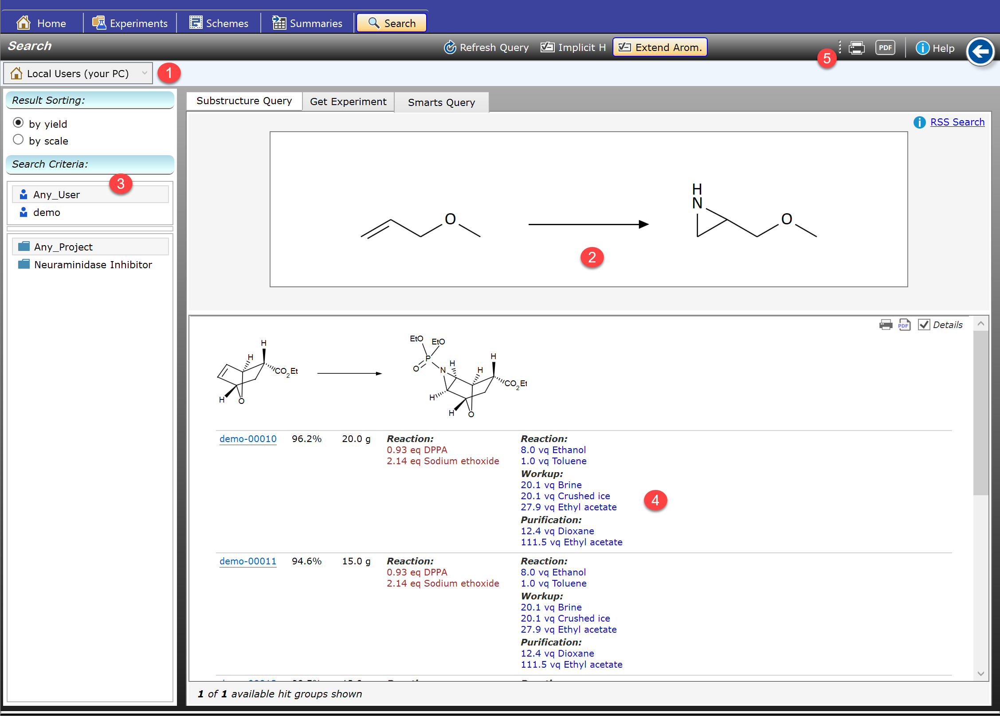
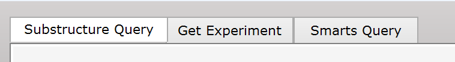
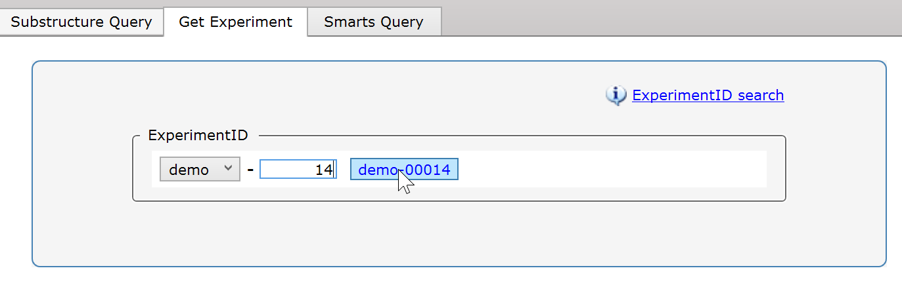
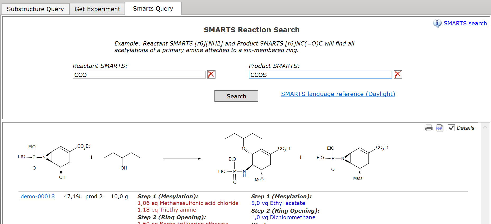

Search Section
General Interface
The Search Section is a powerful tool for leveraging the accumulated knowledge of either your own experiments, or for consulting the complete in-house knowledge if connected to the Espresso ELN server database. You can consider the latter as a gradually growing reaction database, which allows you to avoid spending time to develop already known reactions, and repeating conditions known not to work. Since knowledge sharing is one of the fundamental benefits of an ELN, implementing a server infrastructure is highly recommended.

Espresso ELN provides facilities for performing reaction substructure searches (RSS) based on reaction substructures, or based on the SMARTS query language (see the Daylight language reference). The results can be filtered by user and project utilizing pre-populated lists, and the search scope can be set to the local PC or the whole organization. In addition, also complete project summaries of every user can be retrieved from the server database. The results are presented in a concise grouped an sorted list, with sufficient detail to allow the assessment of an experiment before actually opening it.
1-Search Scope: This important switch determines if the search should occur within the experiments on your own machine only, or within the accumulated in-house reaction knowledge. The latter only is available if the Espresso ELN server infrastructure was established, which can be performed rather easily (see Server Synchronization).
2-Query Area: Depending on the search tab selection, this area contains different input elements. Above screen shot illustrates the substructure sketch input element.
3-Search & Sort Filters: The Search Criteria part contains lists of available projects and users to potentially filter for. The default filter types specify all users and all projects - depending on the search scope (top scope selector), this can be related to the current machine, or to the organization (displaying finalized experiments only). The sort order of the resulting reaction groups and their contained experiments can be specified to be by yield or by experiment scale (higest yields or largest scales first).
4-Search Results: This area displays the search results, grouped by reaction and ordered by reaction yield or experiment scale. Clicking a blue experiment link opens the experiment in the Experiments section. Clicking the Back button in the top-right corner will switch back to the Search section. In case of a large number of hits, the number of displayed experiments is limited to the 50 most meaningful ones (highest yield or scale) per reaction group. Additionally, only the 20 highest yield or largest scale reaction groups initially are rendered, to allow a preview of the results. Additional result chunks of 20 groups gradually can be added, until eventually all results are displayed. The result group toolbar allows to switch off details of a single group and to print or export to PDF a group.
5-Search Toolbar: This toolbar exposes functionality for printing and exporting all currently displayed result groups.
A. Sketch-based Reaction Substructure Searches
The overview screen shot above illustrates the Sketch RSS search interface. Simply click on the sketch area to create or edit a substructure query via the built-in chemical drawing editor.

In Espresso ELN, a reaction substructure query sketch can consist of any number of reactants (the leftmost one is the reference reactant), but only the leftmost product substructure is considered in the search, the others are ignored. Most importantly, no atom mapping is required, and reaction centers don't need to be marked.
Also reaction substructure queries for reactants only and products only are possible; the query structure reaction role is specified by its position before or after the reaction arrow:
Full RSS query: |
Reactant(s) only RSS query: |
Product only RSS query: |
A (+ B + ..) ---> D |
A (+ B + ..) ---> |
--- > A |
Any additional, non-reference reactants are, for technical reasons, required to be ungrouped (e.g. no salts).
Intramolecular reactions are specified by grouping the involved intramolecular substructures by grouping them. Thus, (CO2Me,EtOH) -> CO2Et specifies a lactonization (the parentheses symbolizing a group) - no intermolecular esterifications will be found by the query.
Structure Query options (toolbar):
- Refresh Query: Since the query section contents remain unchanged when switching to other tabs, there may be situations in which the results are no more up-to-date when returning to the Search section, due to subsequent changes to experiments. In this case this button updates the results.
- Implicit H: If checked, all query heteroatoms are assigned implicit hydrogens. Thus, C-O is treated as C-OH, and C-N is treated as C-NH2, etc. The default is unchecked. If unchecked, even e.g. C-OH is treated as C-O, but C-O-H is left as is.
- Extended Arom.: If checked, aliphatic query centers are allowed to be an attachment point to an aromatic system to produce a match. If unchecked, only aliphatic matches are found. The illustration below shows the effect of this parameter being switched on/off:

Note that queries with non-aromatic double-bonds never match aromatic targets, even if above option is checked:

RSS engine background: The Espresso ELN RSS engine is built on top of the well established, unmodified Open Source software OpenBabel, substantially extending its compound substructure search functionality towards a proprietary reaction substructure search capability.
The experiment-ID search allows the quick location of an experiment with a specific ID, also across all users if in server search scope. Instead of typing the full ID, e.g. "demo-00014", only the final digits of the experiment-ID need to be typed in, and the application fills in the missing zeros between the user-ID (selectable in the popup) and the digits. Whenever a hit is found, a button for opening the specified experiment appears.

C. SMARTS-based reaction substructure searches
SMARTS is a powerful chemical structure query language allowing very precise substructure query specifications. It was originally developed at Daylight Chemical Information Systems, and, along with SMILES, has meanwhile become an integral part of cheminformatics. Its syntax is described in detail this Daylight reference. While primarily meant for compound substructure descriptions, its use has been extended by the Espresso ELN search engine towards efficient reaction substructure searches.

While sketch RSS might be the method of choice for intuitive standard searches, SMARTS often is the better choice for more specialized queries, offering a full toolbox of query parameters not available for sketch RSS searches.